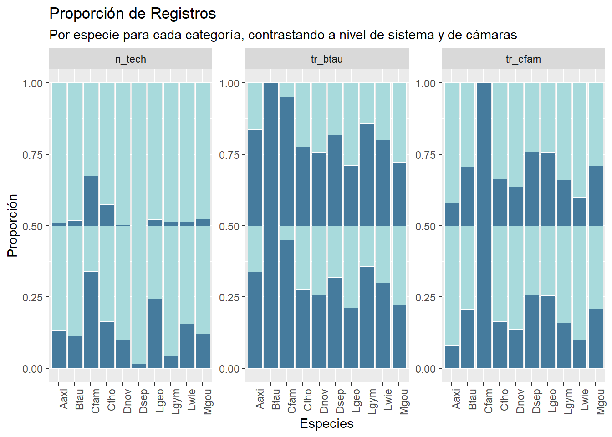
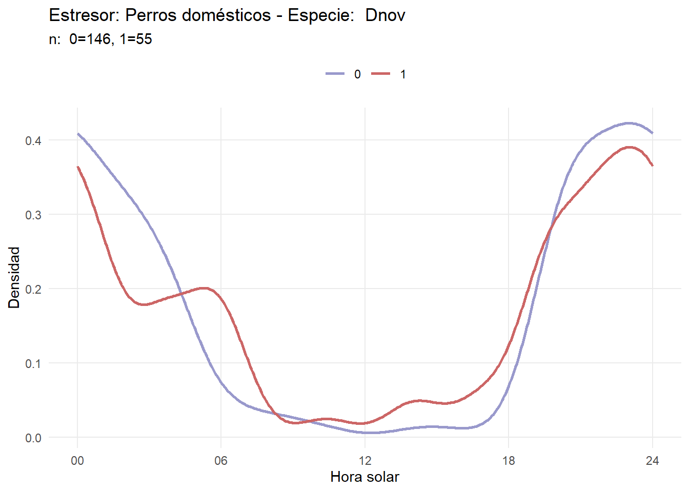

10 Kernels de actividad
10.1 Exploración de estresores a nivel de cámara y sistema
En este apartado se explorarán los patrones diarios de actividad de cada especie mediante curvas de densidad de kernel (KDE), evaluando cualitativamente cómo varía la actividad diaria en presencia y ausencia de disturbios.
Para generar los kernels de actividad, se optó por trabajar con un solo nivel del estresor: a nivel de cámara o a nivel de sistema. A nivel de cámara, las tasas de registro se calcularán utilizando los datos específicos de cada cámara, y los datos espaciales, como la proporción de área cerrada, se estimarán en un buffer de 100 metros alrededor de la misma En el nivel de sistema, se aplicará la misma metodología, pero a escala del sistema y con buffers de 500 metros desde el centroide.
Para determinar a qué nivel se va a trabajar se deben categorizar los registros y obtener para cada uno en qué categoría del estresor se encuentra (en presencia o ausencia) para ambos niveles.
En la siguiente tabla se puede ver para cada registro el valor correspodiente para cada categoría (cat_...)
load("./data_processed/datos_procesados_v4.RData")
data_categorized <- data %>%
mutate(cat_n_tech_sys = case_when(
n_tech_sys == 0 ~ "0",
n_tech_sys > 0 ~ "1"
),
cat_n_tech_cam = case_when(
n_tech_cam == 0 ~ "0",
n_tech_cam > 0 ~ "1"
),
cat_tr_cfam_sys = case_when(
tr_cfam_sys == 0 ~ "0",
tr_cfam_sys > 0 ~ "1"
),
cat_tr_cfam_cam = case_when(
tr_cfam_cam == 0 ~ "0",
tr_cfam_cam > 0 ~ "1"
),
cat_tr_btau_sys = case_when(
tr_btau_sys == 0 ~ "0",
tr_btau_sys > 0 ~ "1"
),
cat_tr_btau_cam = case_when(
tr_btau_cam == 0 ~ "0",
tr_btau_cam > 0 ~ "1"
)
) %>%
select(site, system, camera, solar, sp, cat_n_tech_cam,cat_n_tech_sys,cat_tr_cfam_cam, cat_tr_cfam_sys, cat_tr_btau_cam,cat_tr_btau_sys)
paged_table(head(data_categorized))Algo importante es contar con suficientes registros dentro de cada categoría, por lo tanto se visualiza esto para cada especie:
# Resumir las categorías para n_tech, tr_btau y tr_cfam
dat <- data_categorized %>%
group_by(sp) %>%
summarise(across(starts_with("cat"),
list(Ausente = ~sum(. == "0"),
Presente = ~sum(. == "1"))))
paged_table(head(dat))dat <- dat %>%
ungroup() %>%
pivot_longer(cols = -sp,
names_to = c("category"),
values_to = "count")
# Crear un nuevo campo para la variable
dat <- dat %>%
mutate(variable = case_when(
str_detect(category, "n_tech") ~ "n_tech",
str_detect(category, "tr_btau") ~ "tr_btau",
str_detect(category, "tr_cfam") ~ "tr_cfam",
TRUE ~ NA_character_
))
# Graficar las tres variables en un solo gráfico usando facet_wrap
ggplot(dat, aes(x = factor(sp), y = count, fill = factor(category))) +
geom_bar(stat = "identity", position = "fill", color = "white", size = 0.25) +
facet_wrap(~variable, scales = "free_y") + # Crear paneles para cada variable
labs(title = "Proporción de Registros",
subtitle = "Por especie para cada categoría, contrastando a nivel de sistema y de cámaras",
x = "Especies",
y = "Proporción",
fill = "Categoría") +
theme(axis.text.x = element_text(angle = 90, hjust = 1), legend.position = "none") +
scale_fill_manual(values = rep(c("#a8dadc", "#457b9d"), length.out = length(unique(dat$category))))
Este color es para la presencia del estresor y este para la ausencia Por categría hay “dos graficos” el de arriba es a nivel de camara y abajo a nivel de sistema.
10.1.1 Conclusión
En esta exploración se puede notar que la cantidad de registros por categoría se distribuye mejor si se trabaja a nivel de sistema. Por lo tanto a este nivel se va a trabajar.
data_categorized <- data_categorized %>%
select(site, system, camera, solar, sp, ends_with("_sys"))
paged_table(head(data_categorized))10.2 Densidades de kernel
load("./data_processed/datos_procesados_v4.RData")
data <- data %>% filter(sp %in% c("Ctho", "Lgym", "Lgeo", "Lwie", "Dnov", "Dsep", "Aaxi", "Mgou"))Se crea una función para categorizar las variables, lo cual permite clasificar la presencia y ausencia del estresor para cada especie y calcular las respectivas densidades de kernel. El objetivo es obtener, para cada especie, curvas de densidad de kernel que reflejen la actividad en condiciones de presencia y ausencia para cada uno de los tres estresores.
# Función para categorizar las variable y calcular las densidades
calculate_density <- function(data, var_name) {
# Definir el punto de corte para las categorías
half_value <- max(data[[var_name]]) / 2
# Crear una nueva columna para la categoría
data <- data %>%
mutate(cat = case_when(
!!sym(var_name) == 0 ~ "0",
!!sym(var_name) > 0 ~ "1",
))
# Extraer las horas solares para cada categoría
dat_0 <- data %>% filter(cat == "0") %>% pull(solar)
dat_above_0 <- data %>% filter(cat == "1") %>% pull(solar)
# Ajuste de la densidad para cada conjunto de datos, sólo si hay suficientes datos
act_0 <- if(length(dat_0) > 1) fitact(dat_0) else NULL
act_above_0 <- if(length(dat_above_0) > 1) fitact(dat_above_0) else NULL
# Función para extraer pdf si es válido
extract_pdf <- function(act_obj, category) {
if (!is.null(act_obj) && inherits(act_obj@pdf, "matrix")) {
data.frame(
angle = act_obj@pdf[, "x"],
density = act_obj@pdf[, "y"],
category = category
)
} else {
data.frame(
angle = numeric(0),
density = numeric(0),
category = character(0)
)
}
}
# Extraer los pdf para cada categoría
density_data_0 <- extract_pdf(act_0, "0")
density_data_above_0 <- extract_pdf(act_above_0, "1")
# Combinar los dataframes de densidad en uno solo
density_data <- bind_rows(density_data_0, density_data_above_0)
# Devolver tanto la tabla de densidad como la tabla original con la categoría
return(list(
density_data = density_data,
categorized_data = data %>% select(!!sym(var_name), cat)
))
}Se aplica la función para cada variable de interés.
# Generalización para todas las especies y variables
generalized_density_data <- data %>%
group_by(sp) %>%
nest() %>%
mutate(
density_tr_btau_sys = map(data, ~ calculate_density(.x, "tr_btau_sys")),
density_n_tech_sys = map(data, ~ calculate_density(.x, "n_tech_sys")),
density_tr_cfam_sys = map(data, ~ calculate_density(.x, "tr_cfam_sys"))
)
save(generalized_density_data, file="./data_processed/generalized_density_data.Rdata")Breve explicación del código:
- Este código calcula densidades de actividad en horario solar para diferentes especies de mamíferos en función de tres variables (tr_btau_sys, tr_cfam_sys, n_tech_sys).
- Extracción de pdf: Si el ajuste es válido (i.e., si la densidad es representada por una matriz), se extraen las coordenadas x y y del pdf que representa la densidad para la categoría dada.
- El objeto generalized_density_data contiene las densidades calculadas para cada especie (sp) y para cada una de las tres variables (tr_btau_sys, tr_cfam_sys, n_tech_sys), estructuradas en forma de tablas anidadas.
Por ejemplo estos son los primeros diez valores para luego graficar la densidad de kernel para Dnov frente al estresor de ganado vacuno. En category se tiene ausencia cuando es igual a cero y presencia igual a uno.
load("./data_processed/generalized_density_data.Rdata")
paged_table(head(generalized_density_data[[1,3]][[1]]$density_data))10.3 Diseño y generación de gráficos
Ahora utilicemos los datos descritos para realizar los gráficos. En primer lugar se diseña un gráfico y se almacena en una función.
# Función para crear el gráfico
create_plot <- function(data, title, subtitle, species_name) {
ggplot(data[[1]], aes(x = angle)) +
geom_line(aes(y = density, color = category), size = 1) +
scale_x_continuous(breaks = c(0, pi/2, pi, 3*pi/2, 2*pi),
labels = c("00", "06", "12", "18", "24")) +
labs(title = paste(title, "- Especie: ", species_name),
subtitle = subtitle,
x = "Hora solar", y = "Densidad") +
theme_minimal() +
theme(panel.grid.minor = element_blank(),
legend.title = element_blank(),
legend.position = "top") +
scale_color_manual(values=c("#9999CC", "#CC6666"))
}Y aplicamos esa función a los datos.
# Lista para almacenar los gráficos
plots <- list()
for (sp in 1:nrow(generalized_density_data)) {
# Datos y títulos
datasets <- list(
list(generalized_density_data$density_tr_cfam_sys[[sp]],
"Estresor: Perros domésticos"),
list(generalized_density_data$density_tr_btau_sys[[sp]],
"Estresor: Ganado vacuno"),
list(generalized_density_data$density_n_tech_sys[[sp]],
"Estresor: Densidad humana")
)
# Nombre de la especie (por ejemplo, puede ser el valor en sp)
species_name <- generalized_density_data[[1]][sp]
# Generar los gráficos individuales
individual_plots <- lapply(datasets, function(data) {
n_registros <- data[[1]][[2]] %>%
group_by(cat) %>%
summarise(n = n()) %>%
mutate(text = glue("{cat}={n}")) %>%
pull(text) %>%
paste(collapse = ", ") %>%
paste("n: ", .)
# Pasar el nombre de la especie a la función de creación del gráfico
create_plot(data[[1]], data[[2]], n_registros, species_name)
})
# Almacenar los gráficos en la lista
plots[[length(plots) + 1]] <- individual_plots[[1]]
plots[[length(plots) + 1]] <- individual_plots[[2]]
plots[[length(plots) + 1]] <- individual_plots[[3]]
}Por ejemplo, aquí se puede visualizar el plot de D. novemcinctus

10.4 Calculos de overlap
En este apartado se calculará el valor de overlap, tanto dhat1 como dhat4, utilizando bootstrap para generar intervalos de confianza. Además, se calcula el test de Watson, para evaluar si las densidades son significativamente distintas.
En primer lugar, preparamos los datos y creamos categorías para cada variable.
load("data_processed/datos_procesados_v4.RData")
data <- data %>% filter(sp %in% c("Ctho", "Lgym", "Lgeo", "Lwie", "Dnov", "Dsep", "Aaxi", "Mgou"))
data_categorized <- data %>%
mutate(cat_n_tech_sys = case_when(
n_tech_sys == 0 ~ "0",
n_tech_sys > 0 ~ "1"
),
cat_tr_cfam_sys = case_when(
tr_cfam_sys == 0 ~ "0",
tr_cfam_sys > 0 ~ "1"
),
cat_tr_btau_sys = case_when(
tr_btau_sys == 0 ~ "0",
tr_btau_sys > 0 ~ "1"
)
) %>%
select(site, system, camera, solar, sp, cat_n_tech_sys, cat_tr_cfam_sys,cat_tr_btau_sys)Con el siguiente bloque de código se calcula simultáneamente el overlap, bootstrap y el test de watson.
species <- data %>%
select(sp) %>%
distinct() %>%
pull()
categories <- c("cat_n_tech_sys", "cat_tr_cfam_sys", "cat_tr_btau_sys")
# Crear un data.frame vacío para almacenar los resultados de manera acumulativa
results_df <- data.frame(
sp = character(),
cat = character(),
dhat_1 = numeric(),
dhat_4 = numeric(),
perc_lower = numeric(),
perc_upper = numeric(),
watson_results = numeric(),
stringsAsFactors = FALSE
)
# Iterar sobre las especies
for (sp_name in species) {
# Iterar sobre cada categoría
for (col in categories) {
print(sp_name)
# Filtrar datos para cada categoría y especie
dat0 <- data_categorized %>%
filter(sp == sp_name & !!sym(col) == "0") %>%
pull(solar)
dat1 <- data_categorized %>%
filter(sp == sp_name & !!sym(col) == "1") %>%
pull(solar)
# Calculo de overlap
overlap_01 <- overlapEst(dat0, dat1)
boot_0 <- resample(dat0, 10000)
boot_1 <- resample(dat1, 10000)
boot_est_01 <- bootEst(boot_0, boot_1)
results <- bootCI(boot_est_01[2], boot_est_01[,2])
# Test Watson
dat_0_circular <- circular(dat0, units = "radians", modulo = "2pi")
dat_1_circular <- circular(dat1, units = "radians", modulo = "2pi")
watson_result <- watson.two.test(dat_0_circular, dat_1_circular)
# Agregar el resultado como una nueva fila al data.frame
results_df <- rbind(
results_df,
data.frame(
sp = sp_name,
cat = col,
dhat_1 = overlap_01[1],
dhat_4 = overlap_01[2],
perc_lower = results["perc", 1],
perc_upper = results["perc", 2],
watson_results = watson_result$statistic,
row.names = NULL # Eliminar nombres de las filas en cada unión
)
)
# Imprimir el porcentaje
print(paste("Species:", sp_name, ", Category:", col))
}
}
# Mostrar el data.frame final de resultados
print(results_df)
save(results_df, file="data_processed/results_df_overlap.Rdata")Y se obtiene una tabla de resultados, donde se especifica el dhat1, dhat4, el percentil menor y el mayor, además el pvalor del test de watson.